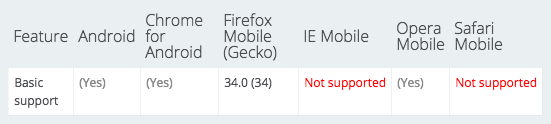

About Me
About Baidu EFE
Agenda
-
Canvas 在 ECharts 中的应用
Why Canvas ?
碰到的问题以及方案
-
WebGL 在 ECharts-X 中的应用
在 WebGL 中使用 Canvas
Canvas 在 ECharts 中的应用
Why Canvas?
- 性能
- 特效绘制
- 像素操作
百度迁徙
- 3k 条边
- 3k 个点的动画
- 尾迹特效
全国 GDP 网格分布热力图
- 像素写入数据
- 颜色映射
Canvas 的问题
-
没有图形对象的管理
层级 Hierarchy
样式 Style
变换 Transform
绘制
- 鼠标事件处理
ECharts 中的方案
图形的管理 - 图形对象
- Path
- Image
- Text
- 样式 Style
填充颜色, 描边颜色，描边线宽，图片高宽
-
平移，旋转，缩放变换
position, rotation, scale
- z
-
zlevel
分层绘制
- ...
图形的管理 - 层级树


图形的管理 - 绘制
-
遍历整个树
计算每个节点变换矩阵(平移，旋转，缩放)
找到图形，更新包围盒，裁剪
放入渲染列表
-
渲染列表排序
zlevel, z
- 遍历渲染列表依次进行绘制
事件管理
- 容器绑定事件
- 反向循环渲染列表判断鼠标是否在某个图形上
- 图形事件分发与冒泡
判断鼠标是否在图形上
-
包围盒粗略判断
快，不精确
适合文字，图片
- 路径与鼠标相交的精确判断
路径图形包围盒的计算
非最小包围盒
最小包围盒
路径与鼠标相交的精确判断
-
isPointInPath
isPointInStroke每次都需要重新构建路径
excanvas 不支持
- 根据图形形状判断
- JS 实现 isPointInPath 和 isPointInStroke
JavaScript 实现
-
isPointInPath
Non Zero Winding Rule

-
isPointInStroke
求点到线段和曲线的距离

Benchmark
路径数据存储 - Path Object
var path = new Path(ctx);
path.moveTo(...);
path.lineTo(...);
...
if (path.isPointInPath(x, y)) {...}
if (path.isPointInStroke(x, y)) {...}
Path2D
var path = new Path2D();
...
if (ctx.isPointInPath(path, x, y)) {...}
if (ctx.isPointInStroke(path, x, y)) {...}

Summary
- Why Canvas
- 图形管理与绘制
- 事件管理
WebGL 在 ECharts-X 中的使用
- 更高的性能
- 更好的特效
- 三维
- ...
加速二维图形绘制
人均 GDP 网格分布 - 三维直方图
全球人口分布
飞行航线可视化
-
绘制贝塞尔曲线
WebGL 只支持线段绘制 - 曲线细分
-
Shader 计算动画的小点位置
减小 JS 顶点的计算以及传输开销
float onet = 1.0 - t; vec3 position = onet * onet * (onet * p0 + 3.0 * t * p1) + t * t * (t * p3 + 3.0 * onet * p2); -
尾迹
多个不透明度逐渐衰减的图形
- 日照
Lambert Shading
- 地表纹理
- 地势变化
洋流 - 向量场可视化
260k 粒子
在 WebGL 中使用 Canvas
- 鼠标选择表面的区域
- 区域高亮绘制
绘制
- 2D 图形管理
- 重绘管理
交互
- 3D 射线求交
- 求出交点的纹理坐标
- 计算出在 Canvas 中的坐标
- 2D 图形拾取